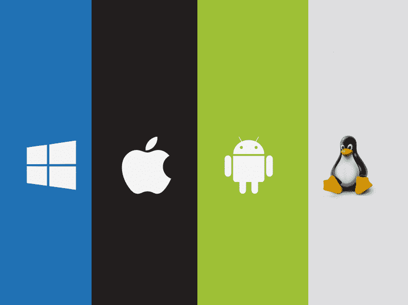
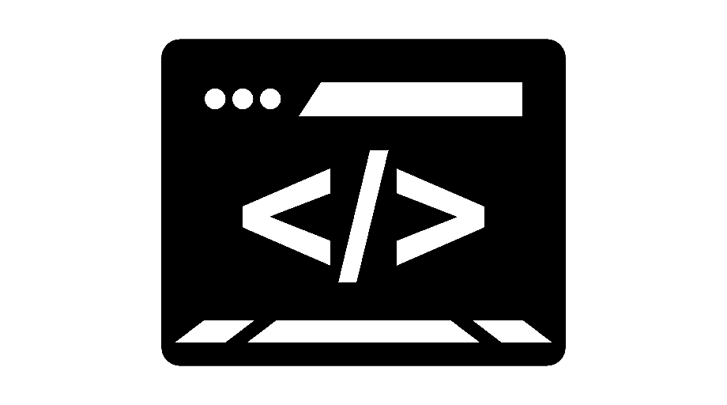

Gestão e Programação de Sistemas Informáticos

-Sistemas operativos
O sistema operativo visa estabelecer a ligação entre
o utilizador e a máquina, sendo essencial para que o utilizador
seja capaz de "comunicar" com o computador. A importância de
estudar
este tópico reside não só na compreensão dos mecanismos que os sistemas operativos
empregam para realizar as suas tarefas
, mas também na sua compreensão, a fim de
evitar os erros de programação mais comuns, que podem resultar em qualquer coisa,
desde um mau desempenho até à perda de informação.
Próximo Tópico
.png)
- Arquiteturas de Computadores
A Arquitetura Informática é um assunto que,
devido à importância do seu conteúdo e aplicação,
fornece conhecimentos e competências que lhe permitem compreender
o funcionamento interno dos computadores e a evolução tecnológica do hardware
(hardware são os elementos físicos ou materiais que compõem um computador).
Próximo Tópico
- Redes de Comunicação
As redes informáticas facilitam a interação e a comunicação entre as pessoas.
Ajuda a aprofundar ainda mais a compreensão de como funcionam
e a evolução destas formas que agora definem
a maioria das interações humanas.
Próximo Tópico

-Programação de Sistemas Informáticos
Este é o corpo do curso, permitem que as pessoas comuniquem
com os computadores usando códigos e termos da linguagem escrita,
mas possuem uma sintaxe muito rigorosa para que os programas sejam claros e possam ser
interpretados e executados pelos computadores.
 Home
Home